MANGOSTEEN · DIGITAL MENU REVIEW · 26 NOVEMBER 2026
A clearer menu, made for the table.
Open the redesigned menu · Table 4 QR flow · Browser results · Measured performance · Photography audit
Photographic fidelity is limited by the available source material.Only the unlabelled hero uses a verified venue food photograph. All 131 named dishes and 13 categories need matched, genuine photography. Neutral “Photo to follow” placeholders are intentional. Stock and generated food have not been presented as Mangosteen dishes. No verified dietary or bestseller data exists, so those filters and badges are omitted. The layouts are implemented; a photographic match to the approved reference is not yet achieved.
Three primary mobile screens · 390 × 844
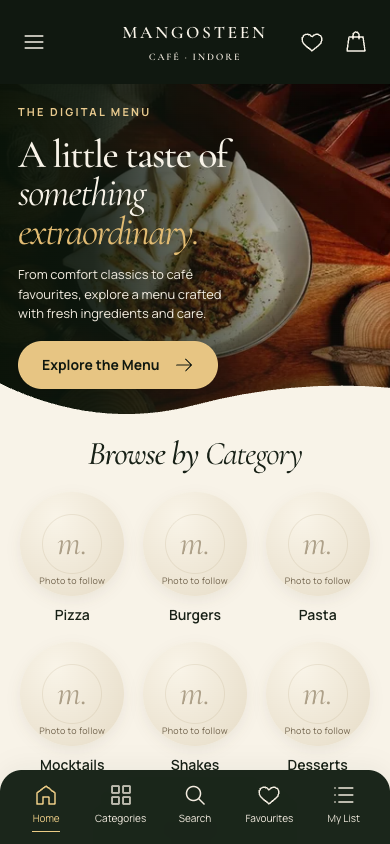
Landing with genuine unlabelled food photograph, curved transition and six category shortcuts.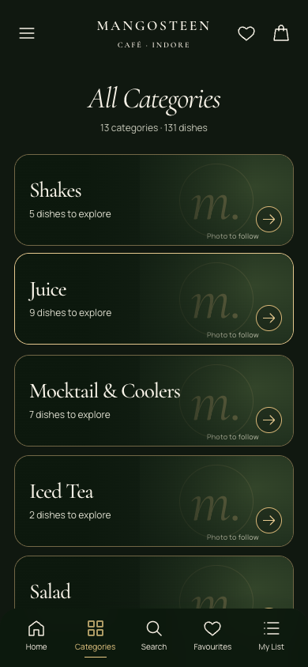
All 13 categories in the source order. Labelled placeholders await genuine category photography.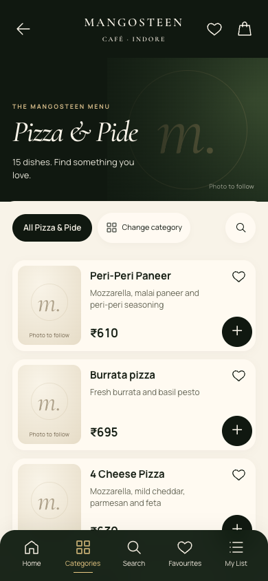
Actual Pizza & Pide catalogue, prices and compact dish cards. No fabricated dietary or bestseller labels.Details, search and saved dishes
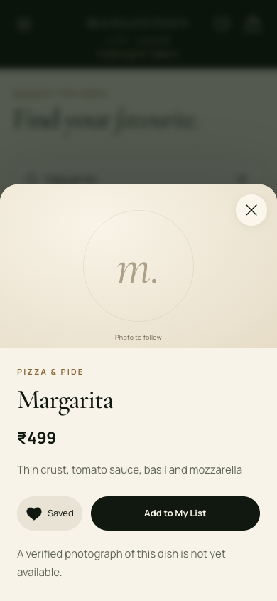
Full description and price; favourite and My List actions; focus-trapped sheet.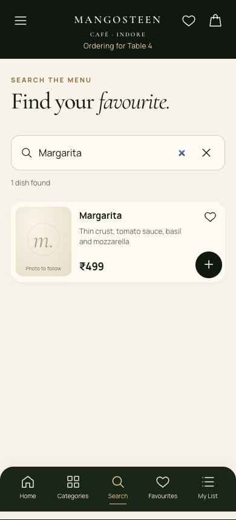
Instant matching across names, descriptions and category names.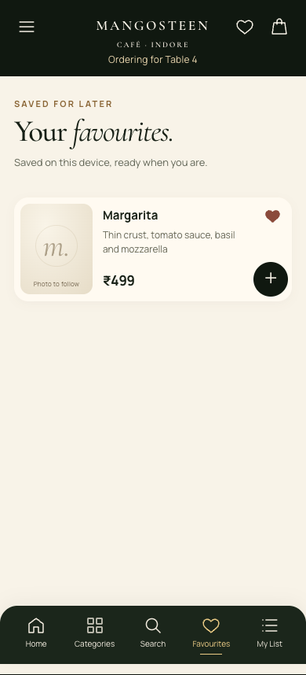
Persistent favourites, using the existing local storage key.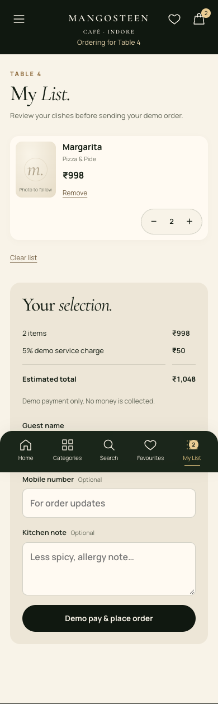
Persistent quantities and totals. Existing demo ordering appears only with a valid table QR context.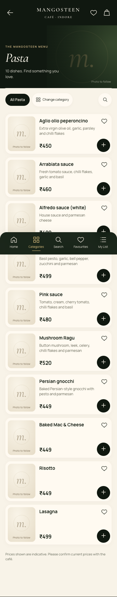
Same reusable layout, actual Pasta dishes and descriptions.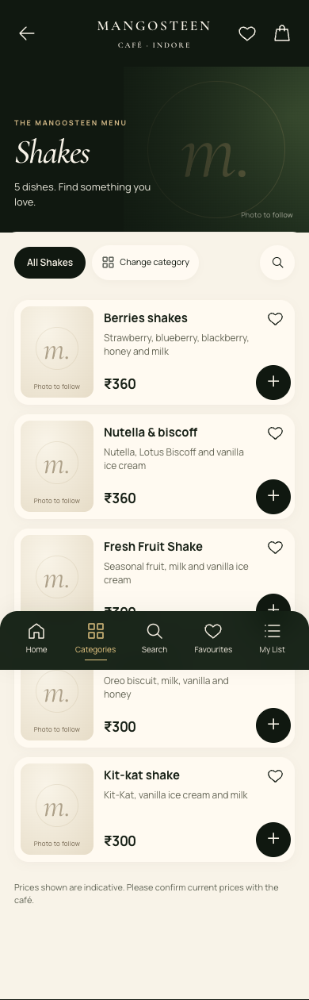
Beverage category, actual Shakes catalogue and prices.Tablet and desktop adaptation
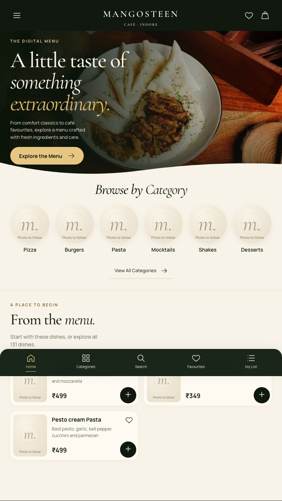
Tablet · 768 × 1024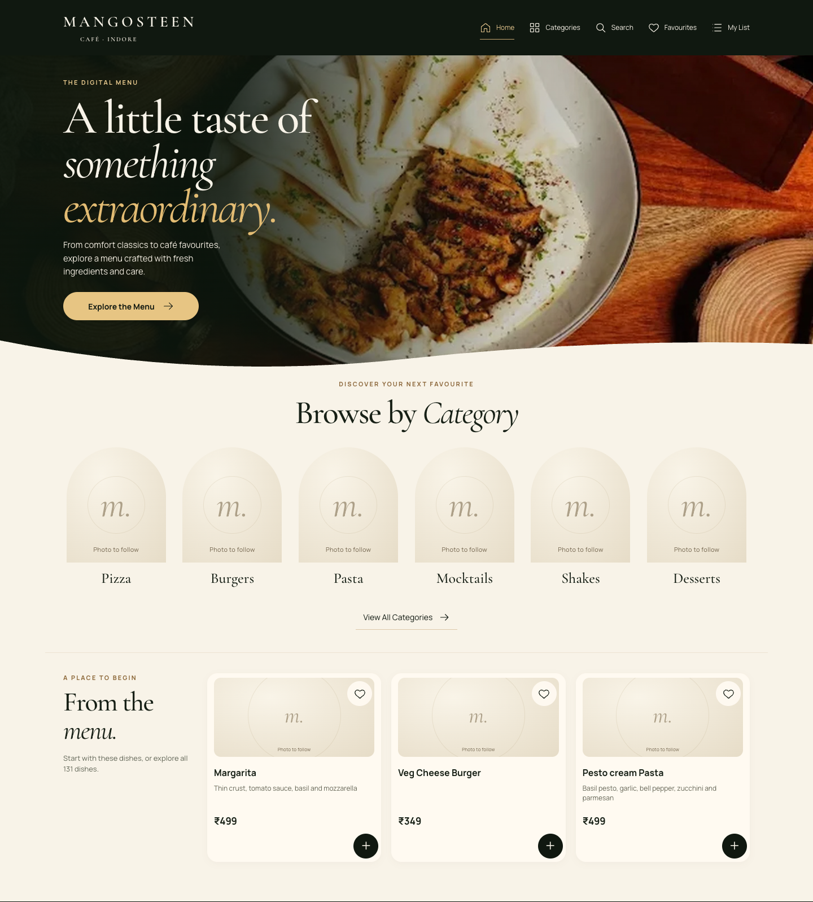
Desktop · 1440 × 1000. Equivalent header navigation replaces the fixed mobile bar.Before and after · same mobile viewport
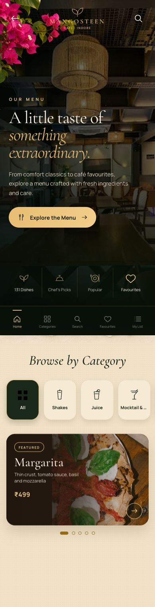
Before · 390 × 844 capture, full-page image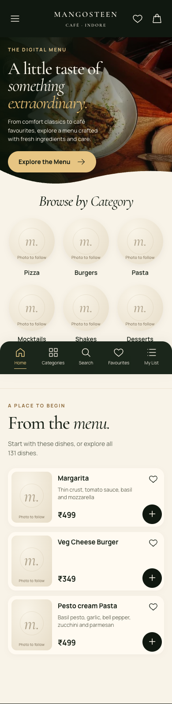
After · same viewport, full-page imageThe homepage, reservation source, menu catalogue, seating IDs, APIs, CRM, authentication and original assets are protected by before-and-after checksums. Test order and reservation submissions use a disposable CRM database. Nothing was deployed.